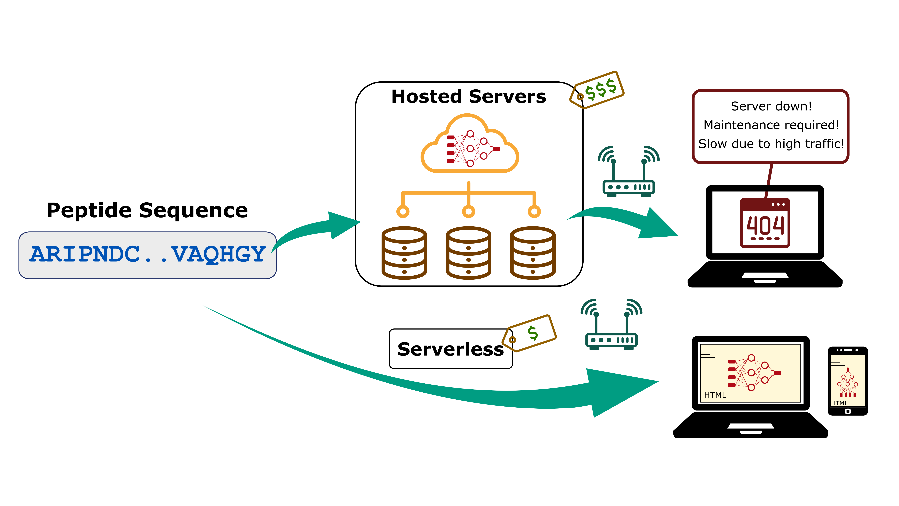
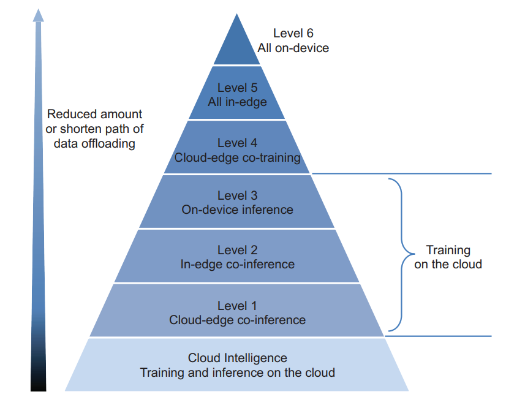
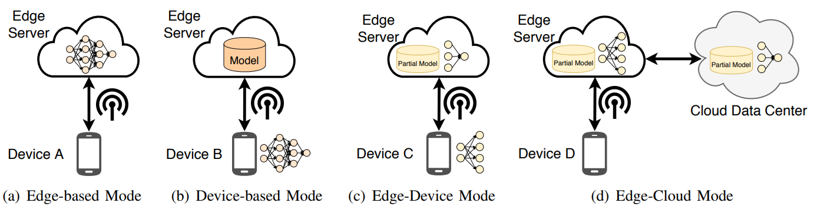

A trained model is more than a file of weights. Reproducing a prediction requires the architecture, serialized parameters, exact preprocessing, vocabulary and token IDs, sequence-length rules, padding behavior, and a compatible tensor runtime. A small mismatch can change the output or prevent the model from loading at all. A conventional release therefore asks each user to recreate a software environment that the original developers already had working.
A typical web predictor hides that complexity behind a REST API. The browser serializes an input and sends an HTTP request. A backend validates and encodes the input, runs the model in a long-lived Python process, and sends the prediction back. This centralizes the dependencies, but every prediction now depends on network access, server uptime, compute allocation, and a maintained deployment environment. The input also leaves the user's device.
We wanted to move that complete inference path into the client. The model graph, weight shards, sequence encoder, and tensor runtime would ship as static web assets. The browser would become the model server. The technical question was whether the bidirectional LSTM and its preprocessing could fit within browser memory, use supported operations, and run quickly enough on ordinary laptops and phones.

The server is part of the experiment
One reason we cared about edge deployment was reproducibility. Reproducing a computational result depends on more than describing the model in a paper. Someone also needs the data, code, trained weights, and a working way to run them. A review of 250 life science and medical machine learning studies found that only about half shared software and 64 percent shared data [2].
Access was the other reason. Research activity and infrastructure are distributed very unevenly between higher and lower income countries [13]. Cheminformatics often depends on compute, software expertise, and institutions with enough funding to support both. A web implementation does not remove those disparities, but it can make a complex inference method available to a much broader community. A user only needs a browser rather than the original hardware and software environment.
That broader access is one practical form of open science. It also supports reproducibility because everyone can interact with the same implementation. The catch is that a web interface creates a new dependency. The method works only while the server is maintained. A study of 2396 bioinformatics tools found that more than 90 percent of recently published tools were reachable, while availability fell to about 50 percent for tools that were ten years old [3].
Installable software has a similar problem. Another study analyzed 36,702 omics software resources and found that almost 28 percent were no longer reachable at the URL in the original paper. Of the 98 tools tested for installation, 28 percent failed outright [4]. A later reproducibility standard made the minimum expectation clear. Data, code, and trained models should all be publicly available [5]. Together, these studies made us treat deployment and preservation as part of the scientific method rather than as an afterthought.

Move inference to the edge
That maintenance problem pushed us toward edge computing. Edge computing means running computation close to where the data are produced instead of sending every input to a central server. The edge could be a phone, laptop, sensor, or nearby gateway. In our case the edge is simply the user's web browser.
The systems literature gives a useful way to think about it. Computation should happen close to the data source, which cuts latency and can keep private data local [6]. Edge computing also extends the older idea of content delivery networks and nearby cloudlets [7]. A CDN already pushes static files close to users. We simply added a trained model to those files.
A six-level framework makes that split more precise [8]. Our setup fits Level 3. Training happens in the cloud and inference runs fully on the device, so no input data are offloaded during inference. Higher levels move more work toward the device. That reduces network latency and bandwidth use and can improve privacy, but it also asks the device to spend more time and energy on computation.

Level 3 describes the practical split we used. Model training stays on conventional compute, while only the forward pass moves to the user's device. A static host delivers the HTML, JavaScript, a TensorFlow.js model description, and binary weight files. The browser reconstructs the trained network once those files arrive.
From there, the prediction path is short. The app maps each amino acid to an integer token and builds the tensors expected by the model. TensorFlow.js calls the loaded Keras model and executes model.predict. The predicted score returns directly to the page, and the peptide sequence never needs to be posted to an inference API.
Performance still matters, so the implementation registers a WebGL backend for acceleration and keeps a CPU backend as a fallback. That ordering is deliberate. WebGL was reported to be roughly two orders of magnitude faster than the plain JavaScript CPU implementation [9]. Browser inference is also less limited than it may sound. One benchmark found TensorFlow.js on integrated graphics outperforming native TensorFlow on CPU for the same inference task [10].
The same distinction appears in the edge-centric inference modes below. Our approach uses device-based inference. The device obtains the model once, then runs predictions locally without communicating with the server [8]. The other modes split each prediction across a device, edge server, or cloud.

That systems design became peptide.bio. In our paper, it powered three bidirectional LSTM models for peptide hemolysis, solubility, and resistance to nonspecific interactions [1]. We trained the models with Keras and TensorFlow, then deployed them through TensorFlow.js. The same static app runs on ordinary computers and phones.
Serverless does not mean server free
Calling this serverless needs one clarification. We did not remove every server. The browser still downloads static files from somewhere, so the first visit needs a web host and a network connection. What disappears is the dedicated service that receives every input and runs every prediction. Static hosting is cheap, easy to mirror, and has fewer moving parts than an application server with a model environment and API.
That simpler deployment feeds back into reproducibility. The trained model becomes part of the publication artifact. A reader can open the page and use the same model without recreating a Python environment or waiting for a remote queue. Inputs also stay on the device during inference.
A static site can still disappear, so this is not the end of the reproducibility story. Hosting a model only on a non-archived site such as a GitHub project is not enough [5]. The inexpensive fix is to deposit the exact HTML, JavaScript, model.json, and weight files in an archive such as Zenodo and assign the bundle a DOI.
Could this use PyTorch?
The deployment pattern is not tied to TensorFlow. If we rebuilt this today, we could train in PyTorch, export the forward graph to ONNX, and run it with ONNX Runtime Web. ONNX Runtime can use WebAssembly broadly and WebGPU where supported. The JavaScript preprocessing would still need to match training exactly, including token IDs, padding, sequence length, and output interpretation.
A native phone application could use ExecuTorch instead. The difficult part is usually operator support and faithful preprocessing, not whether the weights started in TensorFlow or PyTorch. The edge-computing idea stays the same.
This is no longer limited to small classifiers. ViralWasm runs command-line viral genomics tools inside the browser through WebAssembly with only a two to three times slowdown relative to native execution [11]. WebLLM pushes the same idea much further by running large language models in the browser while retaining up to about 80 percent of native decoding performance on the same device [12].
Where the idea fits
These examples do not mean every scientific model belongs in a browser. The pattern works best when the trained model is modest in size and each prediction can run independently. It is less attractive for very large models, expensive preprocessing, protected weights, or workflows that need centralized databases and audit logs.
For us, that boundary is the useful lesson. When a model fits the edge, it can be shipped as a durable scientific artifact rather than a service someone must keep alive.